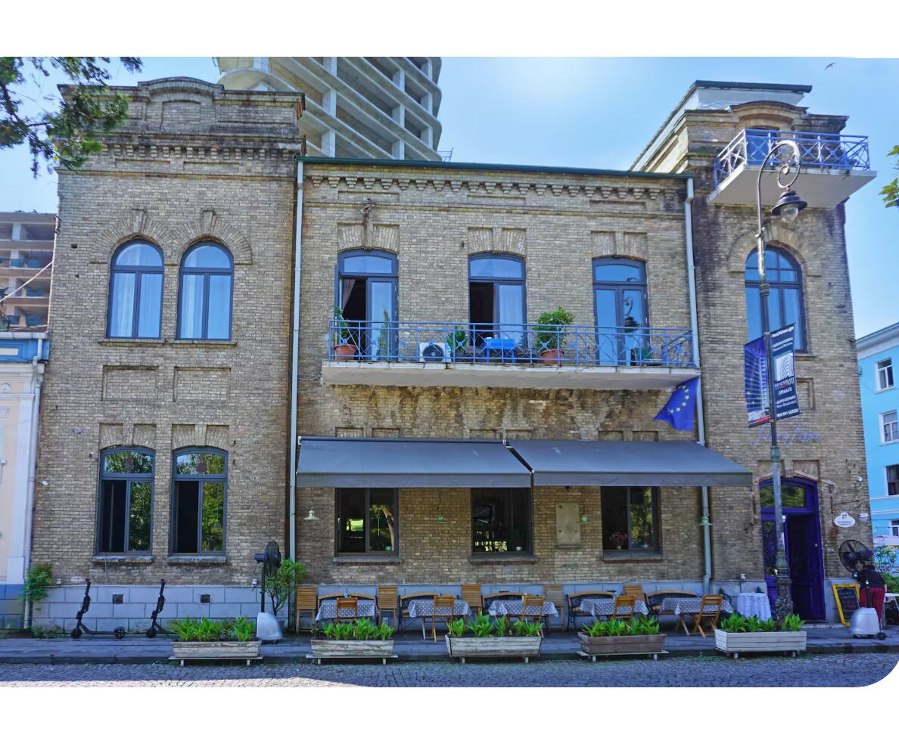

Welcome to our journal, where the past meets the present. Alongside historical deep dives into our archive of vintage portraits, this is where we share news, events, and the ongoing, vibrant life of the Nakashidze Family House today.
A short film tracing the story of the Nakashidze family and their house in Batumi.
The residence is an exceptional example of historic Batumi architecture — built, quite deliberately, to play tricks on the eye. Every decorative detail on the façade was sculpted from the raw brickwork itself; only the very base was plastered, cleverly, to suggest a heavy stone footing that isn't there.
The design prizes symmetry above all. Windows on one flank were sealed and rendered blind, purely to keep the composition in balance. To the street the house presents ornamental wrought-iron balconies; behind it lies a private courtyard ringed with wooden verandas.
The first-floor dining room — today the Fanfan restaurant — still keeps its historic, working fireplace, later captured in a painting by Sandro Antadze. A municipal survey marker from 1905 remains set into the stone of the façade.
